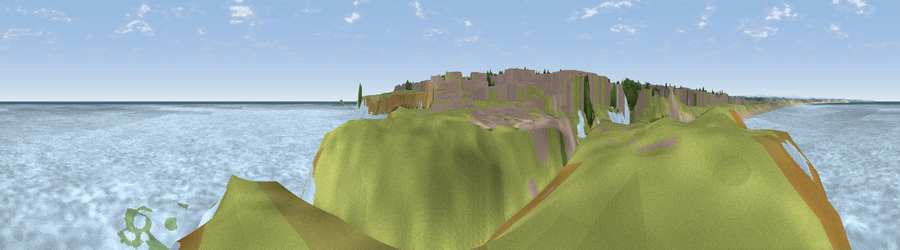

Viewpoint near Seaton Sluice
#40789 in England · top 81% of its area beats it · near Seaton Sluice · access?Where it is
The exact computed spot (NZ 33913 76857). Click the marker for map links.
Public access: no public right of way or access land is recorded at this exact spot — it may be on private land. Computed from Natural England's CRoW access layer and OpenStreetMap rights of way — not the legal definitive map. Always verify locally.
The view, rendered

A 360° render of this exact spot computed from the terrain model, tree cover and land cover — summer colours, afternoon light, calibrated against photographs of famous viewpoints. Real trees, hedges and buildings will differ in detail.
The panorama
Grey silhouette: terrain skyline in each direction (720 bearings, Earth curvature and refraction included). Dashed green: skyline with trees (+15 m) and buildings (+8 m) as obstacles. Blue strip: how far the ground is visible on each bearing.
Where the view opens
Wedge length = distance to the farthest visible ground on that bearing (vegetation-aware). Rings at 10, 25 and 50 km.
What fills the view
93% water · 6% grassland ·
Angular shares of the visible panorama (visual magnitude), not map area. Landscape diversity 0.13 (0–1 Shannon).
Key numbers
More beautiful places nearby
The staircase of upgrades: each row has a higher view potential than everything closer. Driving times are estimates from straight-line distance, calibrated against real road routing — check an actual route before setting out.
| Place | Direction | Drive | Score |
|---|---|---|---|
| Viewpoint near Old Hartley | SSE · 2 km | ~6 min | 43.8 |
| Viewpoint near Backworth | SW · 5 km | ~11 min | 59.0 |
| Northumberlandia viewpoint | W · 10 km | ~20 min | 68.7 |
| White Hill | SSW · 18 km | ~31 min | 69.8 |
| Viewpoint near Sunniside | SSW · 22 km | ~37 min | 77.6 |
| Pontop Pike | SW · 30 km | ~48 min | 77.8 |
| Viewpoint near Longframlington | NW · 35 km | ~53 min | 79.5 |
| Viewpoint near Rothbury | NW · 37 km | ~55 min | 81.1 |
55.08500, -1.47027 · source: osm viewpoint · position refined by local search. Computed location — check access rights before visiting.